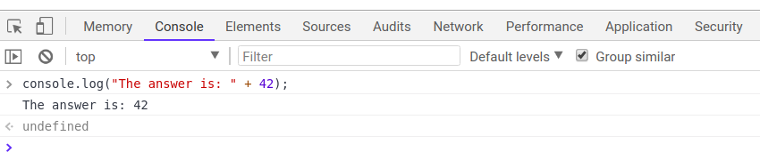

CS 11 - JavaScript
JS Language Basics
Agenda
- Introductions
- Course Overview
- Introduction to JavaScript!
Melissa Hovik (She/Her/Hers)
From Seattle (University of Washington) with various teaching background in web programming, CS 2, intro to theory, data structures, programming languages, and security.
Interested in interdisciplinary CS and bridging theory with real-world applications
In my free time, I enjoy spending time with pets (new puppy above: Lorem), solving puzzles, learning new languages/technologies, and mentoring
Course Overview
The JS programming language and new features introduced in ES6
The browser DOM (which will involve an introduction of basic HTML and CSS)
Asynchronous programming with promises, callbacks, and async/await
Using fetch to retrieve data from public APIs on the web
Introduction to server-side JS (node.js) and implementing our own API with the express.js module
Introduction of JavaScript
These slides will introduce the basics of the JavaScript language:
- History/Terminology
- JavaScript Language Basics
We'll use these building blocks to dynamically update what you see on a web page in response to clicks, text input, timers, etc.
Quick Reference
Motivating JavaScript
In the early days of the web, pages were simply static, using HTML to “mark up” the structure of text
CSS (Cascading Style Sheets) was added to support styling capabilities for different HTML elements on the page (fonts, colors, layout, etc.)
JavaScript was invented in 1995 by Brendan Eich to provide support for client-side interactivity on web pages (handling user events, such as button clicks)
Terminology: Client-Side Scripting

Your browser is a "client" program that knows how to makes requests to a server (e.g. the UW web server). The server takes the request from each client and returns a response (e.g. HTML files, CSS files, images, etc.).
Client-side JavaScript is ran in the browser after the page is returned from server.
Often, this code provides instructions for websites to listen to events and manipulate the page (DOM) as a result.
So... What is JavaScript?
A lightweight "scripting" programming language
Created in 1995 by Brendan Elch (original prototype created in 10 days and called LiveScript)
Used by browsers to make web pages interactive:
- Insert dynamic text into HTML (ex: username)
- Respond to events (ex: the page load, user's mouse click)
- Get information about a user's computer (ex: what browser they are using)
- Perform calculations on user's computer (ex: form validation)
A web standard (but not supported identically by all browsers )
NOT related to Java other than name and some syntactic similarities...
Can be used in the browser, Adobe Acrobat, Adobe Photoshop, embedded computers, the Unix terminal, etc. (we will be using it in the browser)
JS: Adding Behavior to HTML/CSS
We can use JS to...
- Insert dynamic text into HTML (e.g. username)
- React to events (e.g. page load, user’s mouse click)
- Get information about a user’s computer (e.g. what browser they are using)
- ...
We are starting with client-side JS, and will later cover server-side JS with node.js
JavaScript vs. Java
JavaScript is interpreted, Java is compiled. (huh?)
JavaScript has more "relaxed" syntax and rules
- Fewer and "looser" data types (both integers and doubles are considered
Numbers) - Variables don't need to be declared
- Errors are often silent (a few exceptions)
- JS is similar to Python in these ways
JavaScript's key construct is the function rather than the object/class.
JS is contained within a web page and integrates with its HTML/CSS content
Linking to a JavaScript file: <script>
<script src="filename"></script>
HTML (template)
<script src="example.js"></script>
HTML (example)
The script tag should be placed in the HTML page's
head.
If you've seen/used JS before, there are other ways to link JS to HTML, each with different trade-offs. This is what we'll use in the course.
Following Along
As an interpreted programming language, JS is great to interact with a line at a time (similar to Python, but very different than Java). Where do you start?
The easiest way to dive in is with the browser's Console tab with the Chrome Inspect (which can also be used to inspect your HTML/CSS).

Until we learn functions to interact with the HTML DOM with JS, we recommend experimenting with the following code examples using this console to get comfortable with the fundamental syntax and behavior of the language. Try the recommended practice problems along the way!
Comments
// single-line comment
/* multi-line comment */
JS
Comments in JS are similar to Java
You will also see HTML/CSS in this class
HTML: <!-- comment -->CSS/Java/JS: /* comment */Java/JS: // comment
Documenting JS Functions with JSDoc
In this class, we expect you to use the @param and
@returns annotation tags in
JSDoc when appropriate for the function.
The @param annotation specifies the
name and type of each parameter, as well as what the purpose of that parameter
is in the function.
The @returns annotation specifies the type and expected value
of what is returned given the parameters and any other conditions of the
function. You do not need to use any other JSDoc annotations for this course.
HW1 provides some example function comments which you'll finish writing.
Documenting JS with JSDoc: Templates
Here is an example of function comment skeletons as reference:
// Single-line JSDoc comment:
/** Your comment here */JSDoc Single-Line Comment
/**
* brief description of the function
* @param {datatype} parameterName1 - parameter description
* @param {datatype} parameterName2 - parameter description
* @returns {datatype} Description of the return value
*/
function functionName(parameterName1, parameterName2) {
...
}
JSDoc Function Template (Multi-line)
Our First JavaScript Statement: console.log
Used to output values to the browser console, most often used to debug JS programs.
You can think of this as print in Python or System.out.println in Java.
console.log("message");JS (template)
console.log("The answer is: " + 42);
JS (example)

The alert Function
alert("message");JS (template)
alert("Your browser says hi!");JS (example)

A JS function that pops up a dialog box with a message - not ideal in practice, but sometimes a recommended debugging tool when first learning JS. Don't include alert statements in any of your assignments.
Variables
let name = expression;
JS (template)
let level = 23;
let accuracyRate = 0.99;
let name = "Pikachu";
JS (example)
Variables are declared with the let keyword (case-sensitive).
You may also see var used instead of let - this is an
older convention with
weaker scope - DO NOT USE var anywhere
"Types" in JavaScript
let level = 23; // Number
let accuracyRate = 0.99; // Number
let name = "Pikachu"; // String
let temps = [55, 60, 57.5]; // Array
JS (example)
Types are not specified, but JS does have types ("loosely-typed")
Number,Boolean,String,Array,Object,Function,Null,Undefined- Can find out a variable's type by calling typeof, but usually this is poor practice (why?)
- Note: Type conversion isn't always what you expect...
A Note about Declaring Types in JavaScript
If you've programmed in a statically-typed language like Java, you will recall that when declaring variables, you must specify their type which must always stay the same.
boolean isValid = "hello!"; // errorJava
In a dynamically-typed language like JavaScript, you don't need to specify the
type (just use let or const) and you may change the type the variable refers to later in execution.
let isValid = true; // no error
isValid = "hello!";
isValid = 1;
JS
This may seem to imply fewer errors in JS, but it's not uncommon to run into subtle (silent) bugs in your JS programs as a result!
"Constants" in JavaScript
Since ECMA6, JavaScript has a special keyword to declare "constant" values. You should
use these over the let keyword for variables that are not intended to ever
be updated (similar to constants in Java).
let month = 12;
month = 1; // no error
const COOLEST_CLASS = "CS11";
COOLEST_CLASS = "clazz"; // error
JS
These can help avoid some of the bugs
mentioned on the previous slide (an error occurs when trying to reassign a
const).
Number Type
let enrollment = 99;
let medianGrade = 2.8;
let credits = 5 + 4 + (2 * 3);JS
Integers and real numbers are the same type (no int vs.
double). All numbers in JS are floating point numbers.
Same operators: + - * / % ++ -- = += -= *= /= %=
Similar precedence to Java
Many operators auto-convert types: "2" * 3 is 6
NaN is a return value from operations that have an undefined numerical result (e.g. division by 0)
String type
let nickName = "Sparky O'Sparkz"; // "Sparky O'Sparks"
let fName = nickName.substring(0, s.indexOf(" ")); // "Sparky"
let len = nickName.length; // 15
let name = 'Pikachu'; // can use "" or ''
name === "Pikachu"; // true
name === "pikachu"; // false
JS
Methods:
charAt,
charCodeAt,
fromCharCode,
indexOf,
lastIndexOf,
replace,
split,
substring,
toLowerCase,
toUpperCase
More about Strings
Escape sequences behave as in Java: \' \" \& \n \t \\
To convert between Numbers and Strings:
let count = 10; // 10
let stringedCount = "" + count; // "10"
let puppyCount = count + " puppies, yay!"; // "10 puppies, yay!"
let magicNum = parseInt("42 is the answer"); // 42
let mystery = parseFloat("Am I a number?"); // NaN JS
To access characters of a String s, use s[index] or
s.charAt(index):
let firstLetter = puppyCount[0]; // "1"
let fourthLetter = puppyCount.charAt(3); // "p"
let lastLetter = puppyCount.charAt(puppyCount.length - 1); // "!"
JS
Splitting strings: split and join
let s = "the quick brown fox";
let a = s.split(" "); // ["the", "quick", "brown", "fox"]
a.reverse(); // ["fox", "brown", "quick", "the"]
s = a.join("!"); // "fox!brown!quick!the"
JS
split breaks apart a String into an array using a delimiter
- Can also be used with regular expressions surrounded by /:
let a = s.split(/[ \t]+/);
join merges an array into a single String, placing a delimiter between
them
Common Bugs when Using Strings
While Strings in JS are fairly similar to those you'd use in Java, there are a few special cases that you should be aware of.
- Remember that
lengthis a property (not a method, as it is in Java) -
Concatenation with
+:1 + 1is2, but"1" + 1and1 + "1"are both"11"!
Practice: repeat, containsTwice
Variables and types
let name = expression;
JS (template)
let level = 23;
let accuracyRate = 0.99;
let name = "Pikachu";
JS (example)
Variables are declared with the let keyword (case-sensitive). You may also see var used instead of let - this is an older convention, and you should use let in this class.
Types are not specified, but JS does have types ("loosely-typed")
Number,Boolean,String,Array,Object,Function,Null,Undefined- Can find out a variable's type by calling typeof
- Note: Type conversion isn't always what you expect...
A Note about Declaring Types in JavaScript
If you've programmed in a statically-typed language like Java, you will recall that when declaring variables, you must specify their type which must always stay the same.
boolean isValid = "hello!"; // errorJava
In a dynamically-typed language like JavaScript, you don't need to specify the
type (just use let or const) and you may change the type the variable refers to later in execution.
let isValid = true; // no error
isValid = "hello!";
isValid = 1;
JS
This may seem to imply fewer errors in JS, but it's not uncommon to run into subtle (silent) bugs in your JS programs as a result!
String type
let nickName = "Sparky O'Sparkz"; // "Sparky O'Sparks"
let fName = nickName.substring(0, s.indexOf(" ")); // "Sparky"
let len = nickName.length; // 15
let name = 'Pikachu'; // can use "" or ''JS
Methods:
charAt,
charCodeAt,
fromCharCode,
indexOf,
lastIndexOf,
replace,
split,
substring,
toLowerCase,
toUpperCase
More about Strings
Escape sequences behave as in Java: \' \" \& \n \t \\
To convert between Numbers and Strings:
let count = 10; // 10
let stringedCount = "" + count; // "10"
let puppyCount = count + " puppies, yay!"; // "10 puppies, yay!"
let magicNum = parseInt("42 is the answer"); // 42
let mystery = parseFloat("Am I a number?"); // NaN JS
To access characters of a String s, use s[index] or
s.charAt(index):
let firstLetter = puppyCount[0]; // "1"
let fourthLetter = puppyCount.charAt(3); // "p"
let lastLetter = puppyCount.charAt(puppyCount.length - 1); // "!"
JS
Common Bugs when Using Strings
While Strings in JS are fairly similar to those you'd use in Java, there are a few special cases that you should be aware of.
- Remember that
lengthis a property (not a method, as it is in Java) -
Concatenation with
+:1 + 1is2, but"1" + 1and1 + "1"are both"11"!
Practice: repeat, containsTwice
Math object
let rand1to10 = Math.floor(Math.random() * 10 + 1);
let three = Math.floor(Math.PI);
JS
Methods: abs,
ceil,
cos,
floor,
log,
max,
min,
pow,
random,
round,
sin,
sqrt,
tan
Properties: E, PI
for Loops
for (initialization; condition; update) {
statements;
}
JS (template)
let sum = 0;
for (let i = 0; i < 100; i++) {
sum = sum + i; // same as sum += i;
}
JS (example)
let s1 = "It's a-me, Mario!";
let s2 = "";
for (let i = 0; i < s.length; i++) {
s2 += s1[i] + s1[i];
}
// s2 stores "IItt''ss aa--mmee,, MMaarriioo!!"
JS (example)
if/else Statements
if (condition) {
statements;
} else if (condition) {
statements;
} else {
statements;
}
JS
Identical structure to Java's if/else statements
JavaScript allows almost anything as a condition
Practice:
rockPaperScissors
while loops
while (condition) {
statements;
}
JS
do {
statements;
} while (condition);
JS
break and continue keywords also behave as in Java but do not
use them in this class!
Practice:
loopMystery6
Logical Operators
Relational: > < >= <=
Logical: && || !
Equality: == != === !==
- Most logical operators automatically convert types. These are all true:
5 < "7"42 == 42.0"5.0" == 5
-
The
===and!==are strict equality tests; checks both type and value:"5.0" === 5isfalse. It's usually a good idea to use===instead of==. - What does
154 === 154.0evaluate to?
Helpful JavaScript equality table!
Boolean Type
let iLikeJS = true;
let ieIsGood = "IE6" > 0; // false
if ("web dev is great") { /* true */ }
if (0) { /* false */ }
if (1) { /* true */ }
JS
Any value can be used as a Boolean
- "falsey" values:
false,0,NaN,"",null, andundefined - "truthy" values: anything else
Understanding what is "falsey" vs. "truthy" takes patience and practice.
When in doubt, check in the browser console!
Special Values: null and undefined
let foo = null;
let bar = 9;
let baz;
/* At this point in the code,
* foo is null
* bar is 9
* baz is undefined
*/
JS
undefined: declared but has not yet been assigned a value
null: exists, but was specifically assigned an empty value or
null. Expresses intentional a lack of identification.
A good motivating overview of
null vs.
undefined
Arrays
let name = []; // empty array
let names = [value, value, ..., value]; // pre-filled
names[index] = value; // store element
JS (template)
let types = ["Electric", "Water", "Fire"];
let pokemon = []; // []
pokemon[0] = "Pikachu"; // ["Pikachu"]
pokemon[1] = "Squirtle"; // ["Pikachu", "Sqiurtle"]
pokemon[3] = "Magikarp"; // ["Pikachu", "Sqiurtle", undefined, "Magikarp"]
pokemon[3] = "Gyarados"; // ["Pikachu", "Sqiurtle", undefined, "Gyarados"]
JS (example)
Two ways to initialize an array
length property (grows as needed when elements are added)
Array methods
let a = ["Mario", "Luigi"]; // [Mario, Luigi]
a.push("Koopatroopa"); // [Mario, Luigi, Koopatroopa]
a.unshift("Bowser"); // [Bowser, Mario, Luigi, Koopatroopa]
a.pop(); // [Bowser, Mario, Luigi]
a.shift(); // [Mario, Luigi]
a.sort(); // [Luigi, Mario]
JS
Array serves as many data structures: list, queue, stack, ...
Methods: concat,
join,
pop,
push,
reverse,
shift,
slice,
sort,
splice,
toString,
unshift
pushandpopadd/remove from backshiftandunshiftadd/remove from frontshiftandpopreturn the element that is removed
Practice:
findMin
,
switchPairs
Splitting strings: split and join
let s = "the quick brown fox";
let a = s.split(" "); // ["the", "quick", "brown", "fox"]
a.reverse(); // ["fox", "brown", "quick", "the"]
s = a.join("!"); // "fox!brown!quick!the"
JS
split breaks apart a String into an array using a delimiter
- Can also be used with regular expressions surrounded by /:
let a = s.split(/[ \t]+/);
join merges an array into a single String, placing a delimiter between
them
A Few Last Notes on Typing
As you write JS programs, you may will run into some silent
bugs resulting from odd typing behavior in JS. Automatic type conversion, or coersion,
is a common, often perplexing, source of JS bugs (even for experienced JS programmers).
Why does it happen? JS was designed to "work" as intuitively as possible without requiring the strict types.
Why is this important to be aware of? You'll be writing programs which use variables and conditional logic. Knowing what is considered truthy/false and how types are evaluated (at a high level) can make you a much happier JS developer (some practice)
Examples of some "less-intuitive" evaluations:
2 < 1 < 2;// true
0 + "1" + 2;// "012"
[] + [];// ""
"1" / null;// Infinity
Defining Functions
function name(params) {
statement;
statement;
...
statement;
}JS (template)
function myFunction() {
console.log("Hello!");
alert("Your browser says hi!");
}
JS (example)
The above could be the contents of a JS file linked to our
HTML page
Statements placed into functions can be evaluated in response to user events
Practice:
fixErrors2
,
containsTwice
,
functionMystery1
,
sumUpTo
,
veryBestSong
JS Function vs. Java Method
function repeat(str, n) {
let result = str;
for (let i = 1; i < n; i++) {
result += str;
}
return result;
}
let repeatedStr = repeat("echo...", 3); // "echo...echo...echo..."
JS (example)
public static String repeat(String str, int n) {
String result = str;
for (int i = 1; i < n; i++) {
result += str;
}
return result;
}
String repeatedStr = repeat("echo...", 3); // "echo...echo...echo..."
Java (example)
JS Function vs. Python Function
function repeat(str, n) {
let result = str;
for (let i = 1; i < n; i++) {
result += str;
}
return result;
}
let repeatedStr = repeat("echo...", 3); // "echo...echo...echo..."
JS (example)
def repeat(str, n):
result = str;
for i in range(1, n):
result = result + str;
return result;
repeatedStr = repeat("echo...", 3) // "echo...echo...echo..."
Python (example)
Summary of Java vs. JS vs. Python
| Java | JS | Python | |
|---|---|---|---|
| Compiled vs. Interpreted | Compiled | Interpreted | Interpreted |
| Typing | Strong | Loose | Loose |
| Variable Declaration | Must be declared before use | Does not need to be declared before use | Does not need to be declared before use |
| Key Construct | Classes (OOP) | Function | Function |
From the Console to a .js File
Now, we'll use these building blocks of a new programming language to control the behavior of our pages (which we don't get with HTML/CSS!).
The Webdev Toolbox: HTML/CSS + JS
 Image source (MDN) and recommended reading
Image source (MDN) and recommended reading
To develop with JavaScript, we recommend using VisualStudio Code, Atom, Vim (or a similar editor).
JS/HTML Connection
There are many HTML5 tags to create a UI! We'll see a few as we learn about adding behavior to our webpages.
But HTML tags aren't too helpful if we can't do anything with them.
In general, to add interactivity to our HTML/CSS websites we need to:
- Link a JS program to our HTML (in the
<head>) - Identify the elements we want to "listen" to user/page events
- Identify the events we want to respond to
- Identify what each response function is
- Assign the listener elements the functions when the event(s) occurs! own event(s) to listen to
Event-Driven Programming

Unlike a language like Java, JS programs have no main; they respond to user actions
called events
Event-Driven Programming: writing programs driven by user events
Common Types of JavaScript Events
| Name | Description |
|---|---|
| click | A pointing device button (e.g. mouse) has been pressed and released on an element |
| dblclick | A pointing device button is clicked twice on an element |
| keydown | Any key is pressed down |
| keyup | Any key is released |
| mouseenter | A pointing device is moved onto an element that has the attached |
| mouseover | A pointing device is moved onto the element that has the listener attached to itself or one of its children |
| mousemove | A pointing device is moved over an element |
| mousedown | A pointing device button is pressed on an element |
| mouseup | A pointing device button is released over an element |
We'll cover more later (you can find a full list here),
but today we'll demo click!
Handling Events with addEventListener
function handleFunction() {
// event handler code
}
// attaching a named function
element.addEventListener("click", handleFunction);
JS (onclick template)
- JavaScript functions can be set as event handlers
- When you interact with the element, the function will execute
-
You can also attach events with
element.onclick(see example and more information on slide below)
What's involved in a page event?
source.addEventListener("event", response);
function response() {
// response behavior with possible output/document elements changed
}- The source listening to the event, such as a
button, dropdown, paragraph, etc.). You can
also have the window as a source to listen (always for the
loadevent, sometimes for various key events likekeypress). - The event listened to by a source object (e.g. click, load, mouseover, keypress).
- The response for the event (e.g. elements changed)
Older Alternative: onevent handlers
Example with onclick (same effect as previous slide):
// attaching a named function
function handleFunction() {
// event handler code
}
element.onclick = handleFunction;
JS (onclick template)
The newer addEventListener is preferred as it lets you easily
remove a listener to a specific event on an element, and it also lets you add
multiple functions to an event listener. For this example, that doesn't make a
difference, but we will see examples where it does!
More information about tradeoffs here.
So once our DOM is ready, how do we get our page elements?
- Ask for them by id:
document.getElementyById(...) - Query for them with CSS style selectors:
document.querySelector(...)document.querySelectorAll(...)
- Make new ones!
document.createElement(...)(Wednesday)
Accessing Elements from the Document in JavaScript
Methods in document and other DOM objects:
| Name | Description | getElementById(id) | returns the element having the given id (null if not found) |
|---|---|
| querySelector(selector) | returns the first element that would be matched by the given CSS selector string |
| querySelectorAll(selector) | returns a collection of all elements that would be matched by the given CSS selector string |
Handy Shortcut Functions
We will use document.getElementById and
document.querySelectorAll a LOT. It's handy to
declare a shortcut to help us out. You may use the following in your JS
functions (these are exceptions to the rule of having description function
names).
/**
* Returns the element that has the ID attribute with the specified value.
* @param {string} idName - element ID
* @returns {object} DOM object associated with id.
*/
function id(idName) {
return document.getElementById(idName);
}
/**
* Returns the array of elements that match the given CSS selector.
* @param {string} selector - CSS query selector
* @returns {object[]} array of DOM objects matching the query.
*/
function qsa(selector) {
return document.querySelectorAll(selector);
}
/**
* Returns the first element that matches the given CSS selector.
* @param {string} selector - CSS query selector.
* @returns {object} The first DOM object matching the query.
*/
function qs(selector) { // less common, but you may find it helpful
return document.querySelector(selector);
}JS
We will start using these in examples!
Back to HTML with Buttons: <button>
<button id="my-btn">Click me!</button>
HTML
output
Button's text appears inside tag; can also contain images
To make a responsive button or other UI control:
- Choose the control (e.g., button) and event (e.g., mouse click) of interest
- Write a JavaScript function to run when the event occurs
- Attach the function to the event on the control
Right now this button doesn't do anything when we click it. That's because it doesn't have event handler code attached :( Let's see an example where we do have an event listener attached to a button on our page!
click Event Handler: an Example
<img id="pokeball" src="images/pokeball.jpg" alt="a pokeball" />
<button id="demo-btn">Click me!</button>
HTML
let demoButton = document.getElementById("demo-btn");
demoButton.addEventListener("click", changeImage);
function changeImage() {
let pokeballImg = document.getElementById("pokeball");
pokeballImg.src = "images/mystery.gif";
}
JS

output
Putting it All Together
In order for our JS to work when
attached to an HTML file, we need to wrap any code that interacts with the
document inside the window's load event
handler. load is the event listened to on the window to indicate when
the page "is loaded".
When the page is loaded, everything in the
attached function (in our example, we call this main),
is executed, including any click attachments!
// listener attached before page is loaded
window.addEventListener("load", init);
function init() {
// this code is ran after page is loaded!
let demoButton = document.getElementById("demo-btn");
demoButton.addEventListener("click", changeImage);
}
function changeImage() {
let pokeballImg = document.getElementById("pokeball");
pokeballImg.src = "images/mystery.gif";
}button-example.js (commented example)
You can see the HTML output here.
So how do I get started with adding interactivity to my page?
- Add event listener to a source element, and respond
- What is your source?
- What is your event(s)?
- What is the response behavior? Do any elements change as a result?
- Add/remove elements in the DOM as a response to an event.
Tip: Draw tables and wireframes!
The Notion of "Objects" in JavaScript
Anything you interact with on the page is an object. An object in JavaScript has:
- a set of properties (e.g. textContent for DOM objects)
- built-in functions (e.g.
addEventListener). Some objects have different properties/functions than others.
It is helpful to think of the following "types" of objects in JavaScript:
- Window and Global DOM objects
- Objects inside the
document(which is a Global DOM object) - Event objects (yes, events are objects!)
The window and the DOM

The window is a global object your JavaScript programs have access to, representing the browser window.
Has access to the "DOM" document tree - the "load" event is fired when the DOM tree is done loading on the page.
The document object gives access to all page content (body, body's children, etc.)
Listening to the window "load" event
You can only access document elements after the "load" event has fired.
"use strict";
(function() {
window.addEventListener("load", init);
// no access to the document here
function init() {
// we now have access to the DOM tree!
// set up your initial document event handlers here.
}
})();JS
Event Listeners
We have two functions to manage events and response functions for elements
Use addEventListener to attach an event listener
Use removeEventListener to detach an event listener (must provide a named function reference that has been added for the listened event)
addEventListener with one event

addEventListener with multiple events
addEventListener with the Mystery Box page
removeEventListener
Removing Event Listeners: Example
function init() {
let box = document.getElementById("box");
box.addEventListener("mouseover", mouseOverResponse);
box.addEventListener("dblclick", turnOffBox);
}
function mouseOverResponse() {
console.log("You moved the mouse over a box!");
}
function turnOffBox() {
let box = document.getElementById("box");
box.removeEventListener("mouseover", mouseOverResponse);
console.log("You turned off the box!");
}JS
Running solution: box-events.html
Practice On Your Own
What if we wanted to click the image instead of the button to "open the box"?
What if we wanted to add two more buttons to hide/show the box?
Events are also Objects!
Recall that the event handler function can be attached to objects (window, DOM elements, etc.)
sourceEl.addEventListener("click", responseFunction);
function responseFunction(e) {
// we can access the click Event object here!
}JS
When the event occurs, an Event object is created and passed to the event listener. You can "catch" this event object as an optional parameter to get more information about the event.
Example: event-objects.html
Common Types of JavaScript Events
| Name | Description |
|---|---|
| load | Webpage has finished loading the document |
| scroll | User has scrolled up or down the page |
| click | A pointing device (e.g. mouse) has been pressed and released on an element |
| dblclick | A pointing device button is clicked twice on the same element |
| keydown | Any key is pressed down |
| keyup | Any key is released |
| mouseenter | A pointing device is moved onto an element that has the attached listenere |
| mouseover | A pointing device is moved onto the element that has the listener attached to itself or one of its children |
| mousemove | A pointing device is moved over an element |
| mousedown | A pointing device button is pressed on an element |
| mouseup | A pointing device button is released over an element |
We'll cover more later (you can find a full list here),
but today we'll demo click!
Event Object Properties
Event objects contain properties about an event that occurred
What types of properties do you think an Event object has?
The Optional Event Listener Parameter
JavaScript gives us a really useful way to get more information about an event that fired the callback function by accepting an optional parameter to the attached function representing the event object.
Conventionally this event object is given the name "e" or "evt"
demoBtn.addEventListener("click", logClickData);
function logClickData(e) {
console.log("Button clicked!");
console.log(e.type); // "click"
console.log(e.currentTarget); // "#add-btn"
console.log(e.timestamp); // timestamp the event was created (in milliseconds)
}JS
Hiding/Showing Elements
How can we hide display an HTML element?
.hidden {
display: none;
}CSS
In JS, it's possible to modify the style properties of an element directly.
id("box-img").style.display = "none";JS
What's wrong with that?
How can we add/remove CSS classes with JS?
Modifying the classList
You can manipulate the DOM element's classList with the following methods:
| Name | Description |
|---|---|
| add(classname) | Adds the specified class(es) to the list of classes on this element. Any that are already in the classList are ignored. |
| remove(classname) | Removes the specified class(es) to the list of classes from this element. Any that are already not in the classList are ignored without an error |
| toggle(classname) | Removes a class that is in the list, adds a class that is not in the list. |
| contains(classname) | Returns true if the class is in the DOM element's classList, false if not. |
| replace(oldclass, newclass) | Replaces the old class with the new class. |
Resources and Tips
Review programming basics: using variables, arrays, loops, if-statements, and functions
Go over some JavaScript tutorials - there are many great ones!
Practice! We now have JavaScript problems on Practice-It (80+ problems) and its sister site CodeStepByStep (200+ problems).
Check out cool examples of JavaScript on the web!